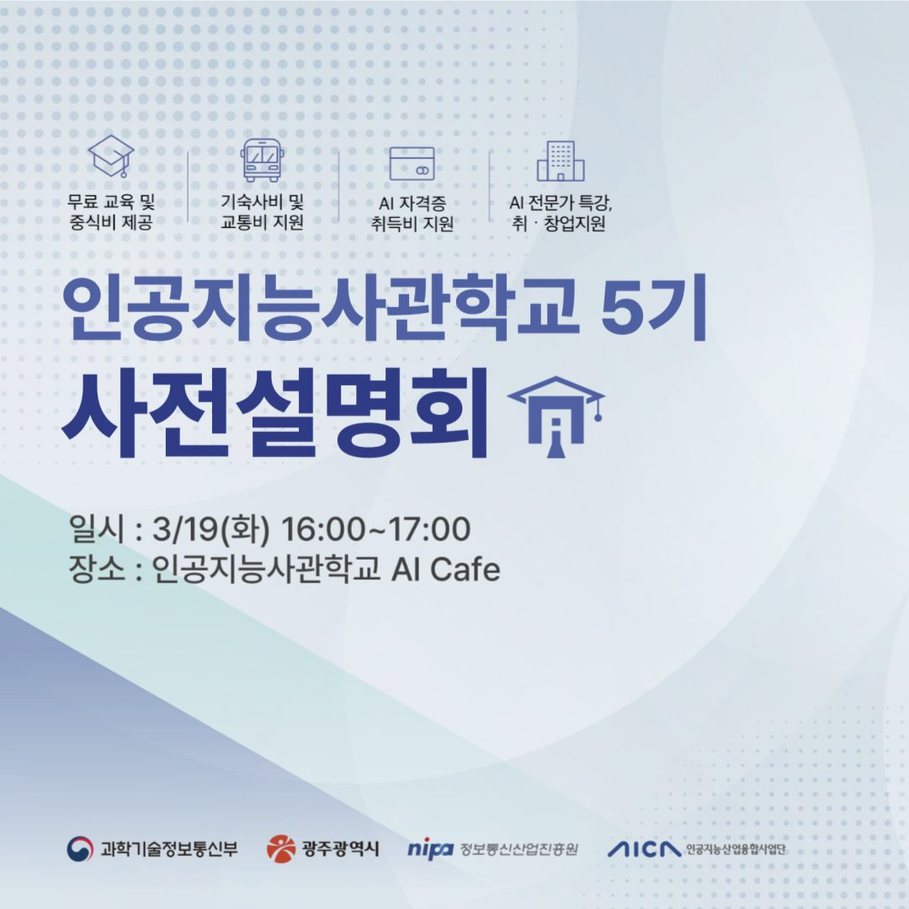
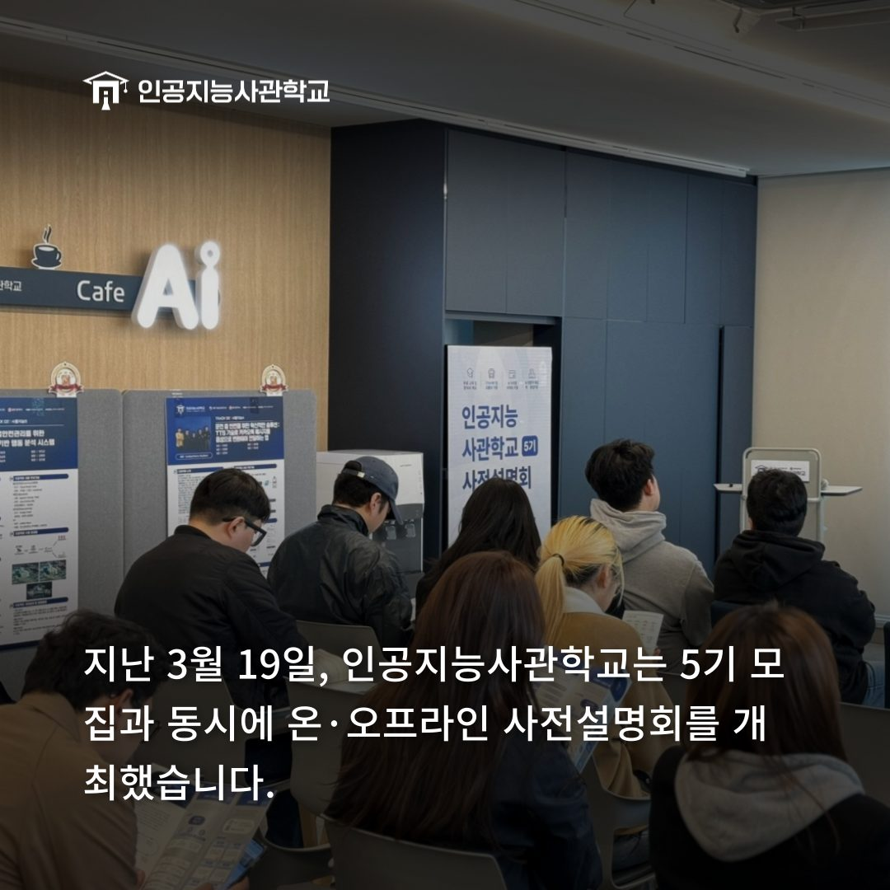
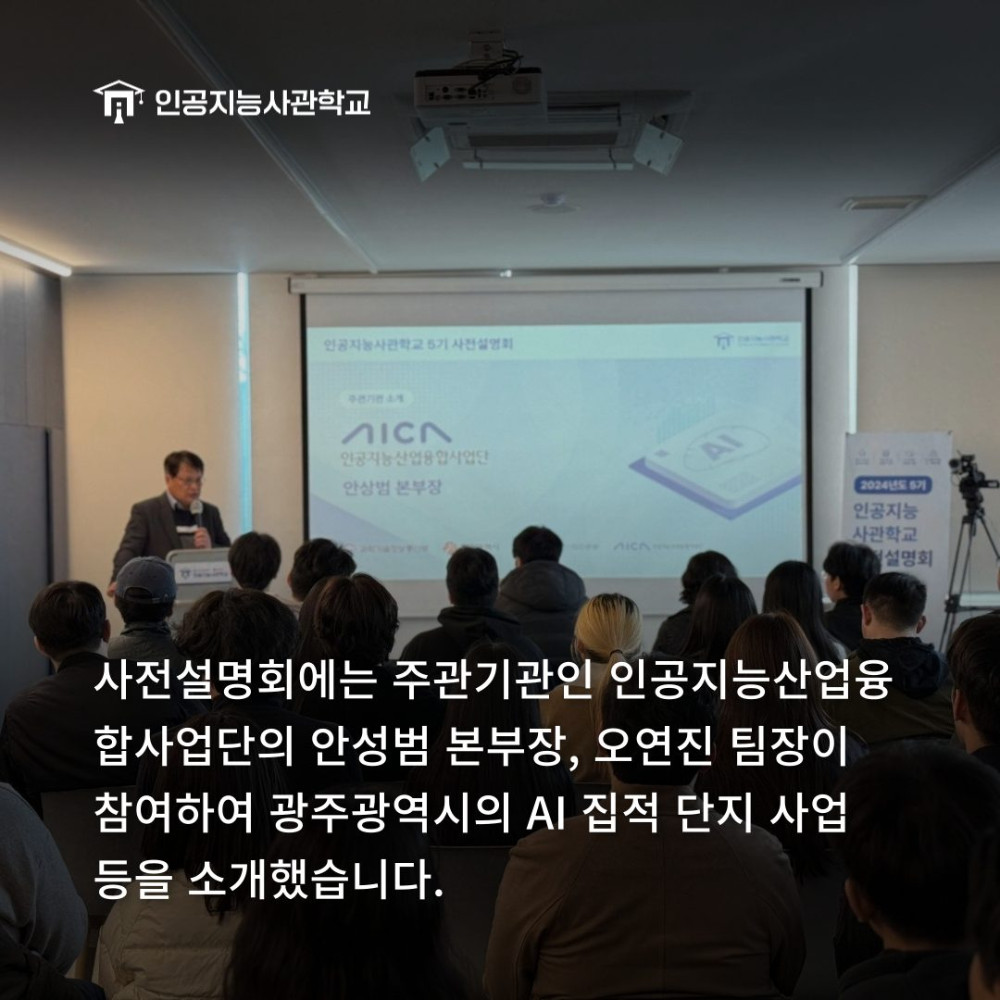
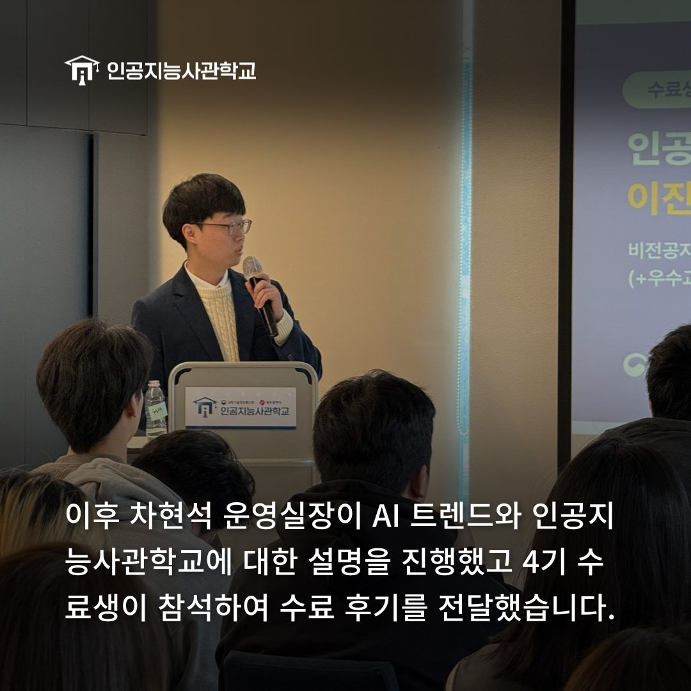
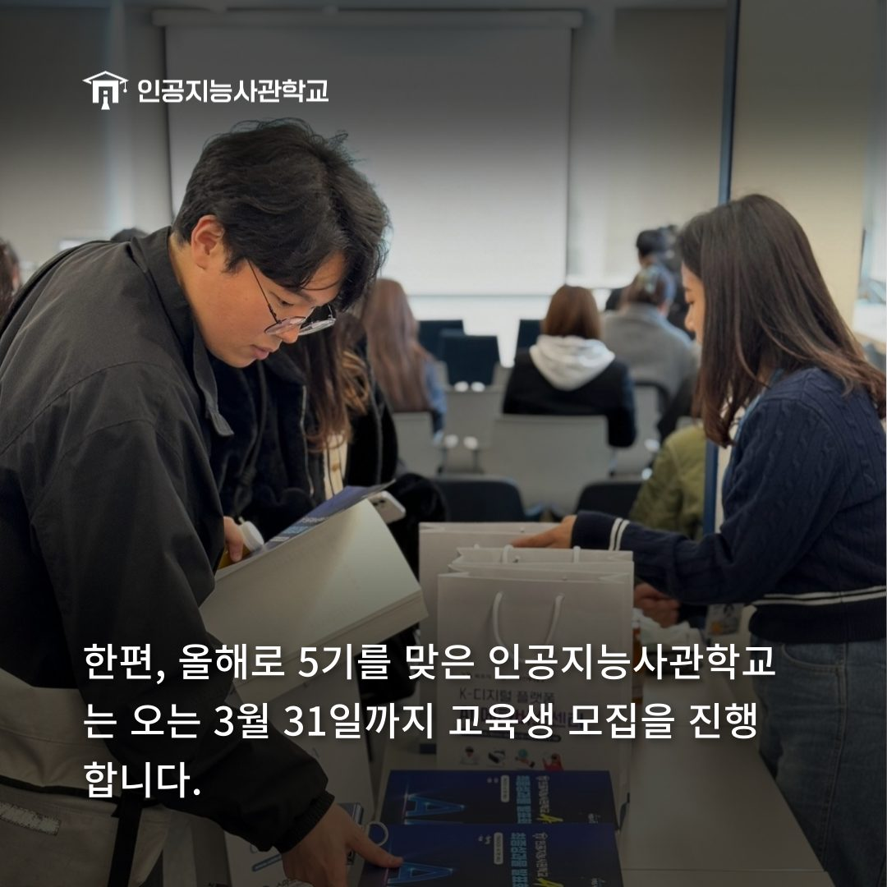

안녕하세요! 인공지능사관학교입니다. 😆

지난 3월 19일, 인공지능사관학교는
AI Cafe에서 5기 사전설명회를 진행했습니다.

온·오프라인 동시 진행된 이번 사전설명회는
아래와 같은 순서대로 진행됐습니다.
주관기관 소개 및 인사 ▼ AI Trend 안내 ▼ 인공지능사관학교 소개 ▼ 수료생 후기 ▼ Q&A ▼ 1:1 상담

주관기관 소개 및 인사 시간에는
인공지능산업융합사업단의 안성범 본부장님, 오연진 팀장님이 참석하셔서
광주광역시 AI 집적 단지 조성과 인공지능사관학교에 대해 설명해주셨습니다.

이후 차현석 운영실장님이 발표자로 나서
AI 트렌드와 인공지능사관학교 커리큘럼 등에 대해 설명해주었습니다.
4기 수료생 두 명이 참석하여 수료 후기를 들려주기도 했습니다.

사전설명회에 참석한 인원은 1:1 상담 진행과
인공지능사관학교 시설을 둘러볼 수 있는 기회를 가졌습니다.